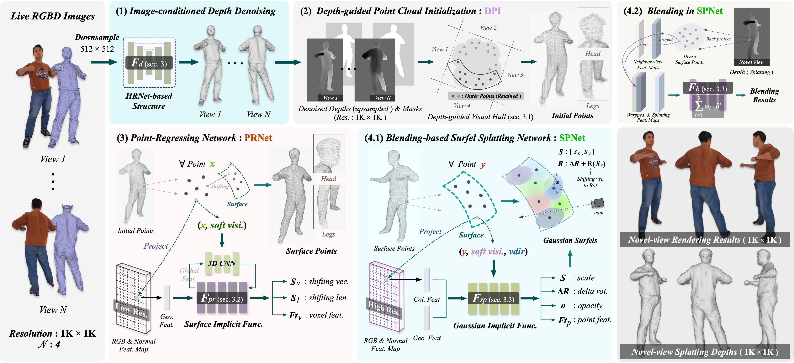

TL;DR : We propose a novel Regressed-Surface-Point-Based method, to leverage Gaussian Surfel Splatting and Blending-Based Appearance Enhancement, for human live free-view rendering from 4 RGBD sensors.
Surface Point Cloud and Free-View Rendering from 4-View RGBD Streams ( Unseen Performers ).
High-quality real-time rendering using user-affordable capture rigs is an essential property of human performance capture systems for real-world applications. However, state-of-the-art performance capture methods may not yield satisfactory rendering results under a very sparse (e.g., four) capture setting. Specifically, neural radiance field (NeRF)-based methods and 3D Gaussian Splatting (3DGS)-based methods tend to produce local geometry errors for unseen performers, while occupancy field (PIFu)-based methods often produce unrealistic rendering results. In this paper, we propose a novel generalizable neural approach to reconstruct and render the performers from very sparse RGBD streams in high quality. The core of our method is a novel point-based generalizable human (PGH) representation conditioned on the pixel-aligned RGBD features. The PGH representation learns a surface implicit function for the regression of surface points and a Gaussian implicit function for parameterizing the radiance fields of the regressed surface points with 2D Gaussian surfels, and uses surfel splatting for fast rendering. We learn this hybrid human representation via two novel networks. First, we propose a novel point-regressing network (PRNet) with a depth-guided point cloud initialization (DPI) method to regress an accurate surface point cloud based on the denoised depth information. Second, we propose a novel neural blending-based surfel splatting network (SPNet) to render high-quality geometries and appearances in novel views based on the regressed surface points and high-resolution RGBD features of adjacent views. Our method produces free-view human performance videos of 1K resolution at 12 fps on average. Experiments on two benchmarks show that our method outperforms state-of-the-art human performance capture methods.
Method

Fig 1. Given a 4-view RGBD live stream captured via Azure Kinects as input: (1) we first apply a depth denoising module [SAILOR, Dong et al. 2023] to reduce the noise in raw depth; (2) a Depth-guided Point Cloud Initialization (DPI) method then leverages visual hull with depth guidance to construct a volume (closed) point set, which is near to the surface; (3) a novel Point-Regressing Network (PRNet) is proposed to learn a surface implicit function to regress the surface points; (4.1) A Surfel Splatting network (SPNet) is proposed to parameterize the radiance field as Gaussian Surfels via learning a Gaussian implicit function; and (4.2) the splatting outputs are further enhanced by an Appearance Blending scheme to render novel-view images in 1K resolution. Geo., Col., visi., Feat., vec., len., rot., cam., Func., Res. are abbreviations for Geometric, Colorimetric, visibility, Feature, vector, length, rotation, camera, Function, and Resolution, respectively.
The operation flow of our rendering system. The inputs are 4-view RGBD images.
Overview Video
Part 1: Demo Video
Part 2: Fast Forward Video (with audio)
Comparison Results
Fig 2. Visualization of the rendering comparisons on the THuman2.0 [CVPR21] dataset, between ours and seven existing methods.
Fig 3. Visualization of the rendering comparisons on the SAILOR [SA23] dataset, between ours and five existing methods.
Comparisons between ours and Function4D [CVPR21], SAILOR [SA23], on the geometric (3D mesh / surface points) and rendering results.
Live Rendering
Interactive / live rendering results are obtained from 4-RGBD Streams using a PC containing one Nvidia RTX 3090 GPU card.
Citation
@article{dong2024gaussian,
title={Gaussian Surfel Splatting for Live Human Performance Capture},
author={Dong, Zheng and Xu, Ke and Gao, Yaoan and Bao, Hujun and Xu, Weiwei and Lau, Rynson WH},
journal={ACM Transactions on Graphics (TOG)},
volume={43},
number={6},
pages={1--17},
year={2024},
publisher={ACM New York, NY, USA}
}